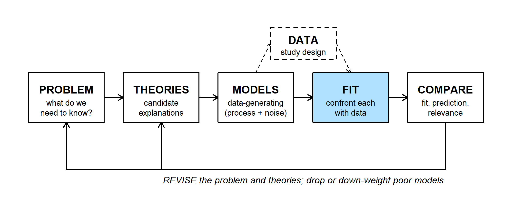
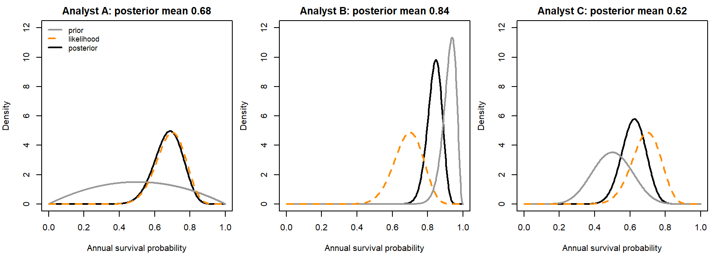
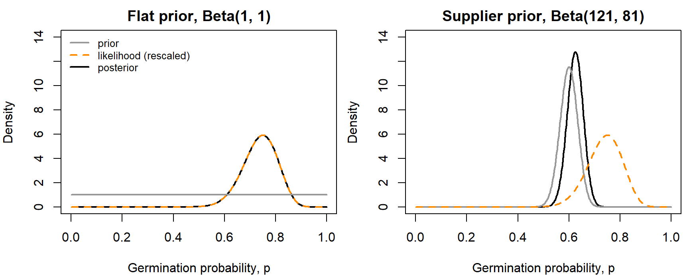
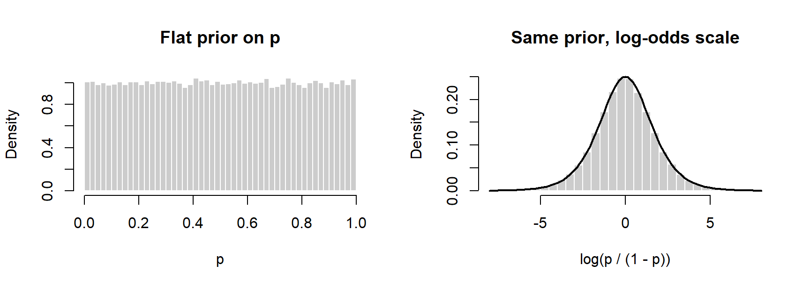
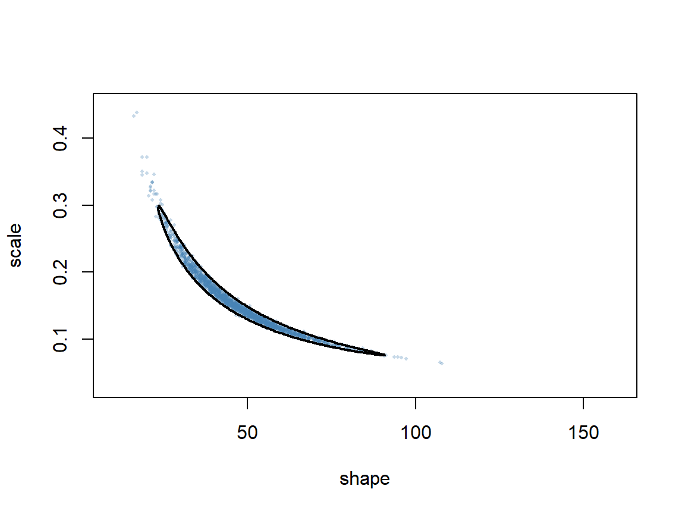
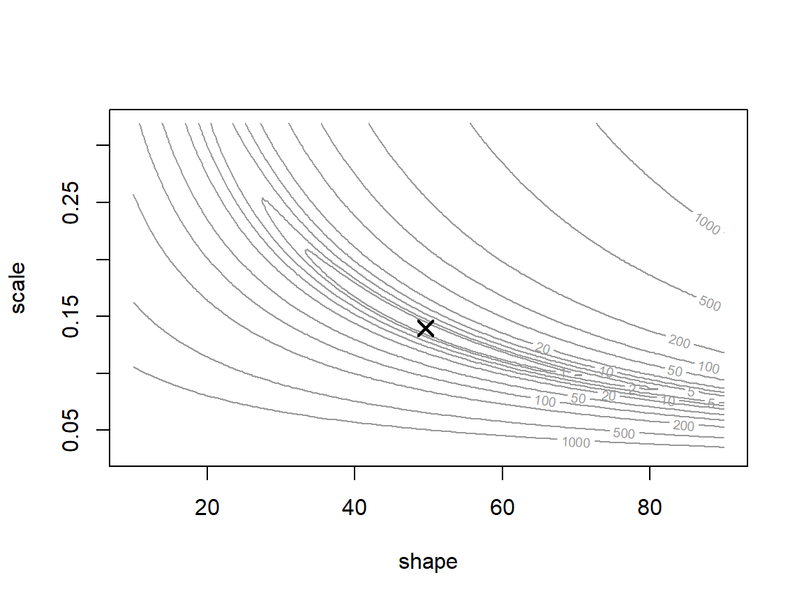
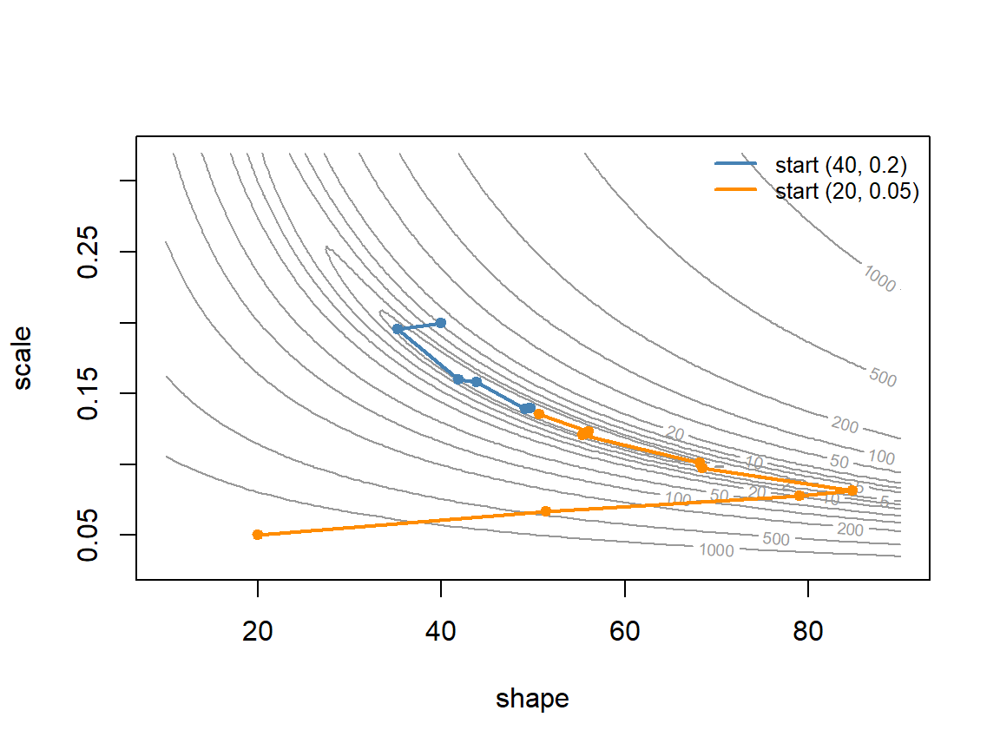

Week 8: Priors, Posteriors, and Derivative-Based Optimization
NRES 746
Oct. 12-14, 2026
R code from this page is also in the companion script. Package: emdbook (for the myxomatosis data).
This material follows Bolker, Ecological Models and Data in R, sections 4.3.3, 6.2.2, 6.4.2, and 7.1-7.2.2 (pp. 149-151, 237-243, 258-260, and 294-302).
Priors and posteriors
Bayesian inference describes uncertainty about a parameter with a probability distribution: the posterior, which combines the likelihood with a prior. With a Beta prior and binomial data, the posterior can be written down without any computing. This part uses that shortcut to ask how much a prior can change an answer, how to summarize a posterior, where people new to Bayesian methods tend to go wrong, and why the approach is so widely used.
1. Big picture

Bayesian inference is one way to do the FIT step: confront a model with data. The model and the likelihood are the same ones used for maximum likelihood. What changes is the answer: a whole distribution for the parameter rather than a best value and an interval.
Bayes' rule for a parameter \(\theta\) and data \(y\):
\[P(\theta \mid y) = \frac{\mathcal{L}(\theta)\, P(\theta)}{P(y)} \qquad\text{posterior} \propto \text{likelihood} \times \text{prior}\]
The denominator \(P(y)\) is a single number that makes the posterior integrate to 1. For one important case it never has to be computed. For a probability \(p\) with binomial data (\(k\) successes in \(n\) trials), a Beta(\(\alpha\), \(\beta\)) prior gives a Beta posterior:
\[\underbrace{p^{k}(1-p)^{n-k}}_{\text{likelihood}} \times \underbrace{p^{\alpha-1}(1-p)^{\beta-1}}_{\text{prior}} = p^{\alpha+k-1}(1-p)^{\beta+n-k-1} \;\Rightarrow\; \text{Beta}(\alpha + k,\ \beta + n - k)\]
A prior that gives a posterior in the same family is called conjugate. Updating is just adding counts: \(\alpha - 1\) and \(\beta - 1\) act like earlier successes and failures (Bolker p. 237), and Beta(1, 1) is flat.
2. WOD: same data, three priors
The WOD (a short warm-up exercise at the start of class) gave three analysts the same data: radio-tracked juvenile desert tortoises at one site, 21 of 30 surviving the year. Each analyst chose a different prior for annual survival:
- A: a weak prior centered on 0.5, Beta(2, 2);
- B: earlier estimates from juveniles raised in a predator-proof pen, Beta(46, 4) (mean 0.92);
- C: an estimate from a severe drought year at another site, Beta(10, 10).
The WOD showed only each prior and posterior. Here the shared likelihood is added (dashed):

The same 30 tortoises give posterior means from 0.62 to 0.84. Comparing results across reasonable priors like this is a prior sensitivity analysis. The best guide to the likelihood is Analyst A's posterior, since a weak prior barely moves it. Analyst B's posterior is the narrowest, but that comes from the prior, not from more data.
Question: Analyst B's prior comes from a predator-proof pen. Is it a reasonable prior for juveniles in the wild? What would you report to a manager who needs one survival rate?
3. Worked example: germination with two priors
A restoration crew tests a native seed lot: 30 of 40 seeds germinate. The seed supplier's records say 120 of 200 seeds from earlier lots germinated. Two choices of prior:
- Flat, Beta(1, 1): posterior Beta(31, 11).
- Supplier, Beta(121, 81), worth about 200 seeds: posterior Beta(151, 91).
These are Bolker's numbers (p. 237-238), recast as a germination trial.
k <- 30
n <- 40
prior_flat <- c(1, 1)
prior_info <- c(121, 81)
post_flat <- prior_flat + c(k, n - k) # Beta(31, 11)
post_info <- prior_info + c(k, n - k) # Beta(151, 91)
# mean = alpha / (alpha + beta); mode = (alpha - 1) / (alpha + beta - 2)
beta_mean <- function(ab) ab[1] / sum(ab)
beta_mode <- function(ab) (ab[1] - 1) / (sum(ab) - 2)
round(c(flat_mean = beta_mean(post_flat), flat_mode = beta_mode(post_flat),
supplier_mean = beta_mean(post_info)), 3)## flat_mean flat_mode supplier_mean
## 0.738 0.750 0.624p_seq <- seq(0.001, 0.999, length.out = 500)
lik_scaled <- dbeta(p_seq, k + 1, n - k + 1) # likelihood rescaled to area 1
# draws prior, rescaled likelihood, and posterior on one panel
plot_panel <- function(prior_ab, post_ab, title) {
plot(p_seq, dbeta(p_seq, post_ab[1], post_ab[2]), type = "l", lwd = 2,
ylim = c(0, 14), xlab = "Germination probability, p", ylab = "Density",
main = title)
lines(p_seq, dbeta(p_seq, prior_ab[1], prior_ab[2]), lwd = 2, col = "grey60")
lines(p_seq, lik_scaled, lwd = 2, lty = 2, col = "darkorange")
}
par(mfrow = c(1, 2), mar = c(4, 4, 2, 0.5))
plot_panel(prior_flat, post_flat, "Flat prior, Beta(1, 1)")
legend("topleft", c("prior", "likelihood (rescaled)", "posterior"),
lwd = 2, lty = c(1, 2, 1), col = c("grey60", "darkorange", "black"),
bty = "n", cex = 0.8)
plot_panel(prior_info, post_info, "Supplier prior, Beta(121, 81)")
par(mfrow = c(1, 1))- Flat prior: the posterior and the rescaled likelihood are the same curve. Its mode is 0.75, the maximum likelihood estimate (MLE); its mean, 0.738, is pulled slightly toward 0.5.
- Supplier prior: the posterior sits between prior and data, closer to the prior (mean 0.624), because the prior is worth 200 seeds and the data only 40. The posterior mean is a weighted average of the prior mean and the data's proportion, with weights proportional to their "sample sizes": \(\frac{200}{240}(0.60) + \frac{40}{240}(0.75) =\) 0.625, close to the exact 151/242 = 0.624 (the flat part of the prior, Beta(1, 1), accounts for the small difference).
beta_mean(prior_info + c(300, 100)) # 300 of 400 germinate, same prior## [1] 0.6993355post_two_steps <- (prior_info + c(k, n - k)) + c(k, n - k) # 40 seeds, then 40 more
post_one_step <- prior_info + c(2 * k, 2 * (n - k)) # 80 seeds at once
rbind(post_two_steps, post_one_step)## [,1] [,2]
## post_two_steps 181 101
## post_one_step 181 101- More data wins. With 300 of 400 seeds germinating, the same supplier prior gives a posterior mean of 0.699: now the data outweigh the prior two to one.
- Updating in sequence. One test's posterior is the next test's prior. Testing 40 seeds and then 40 more gives the same posterior as testing 80 at once.
Explore the trade-off between the prior and the data in the widget. The prior is set as earlier successes and failures, so Beta(1, 1) is "0 of 0" and the supplier's prior is "120 of 200":
Question: Start from the supplier's prior and the crew's 30 of 40. Keeping 75% germination in the data, how many seeds would the crew need to test for the posterior mean to land halfway between 0.60 and 0.75?
4. Summarizing a posterior
A posterior is a whole distribution, but reports usually need a few numbers.
- Point estimates: the posterior mean (most common), median, or mode. With a flat prior the mode equals the MLE. For a skewed posterior the three differ; Bolker prefers the mean because it uses the whole distribution.
- Credible intervals: the central 95% of the posterior (the 2.5% and 97.5% quantiles), or the highest posterior density (HPD) interval, the shortest interval that holds 95% of the probability (Bolker p. 258-259). For a symmetric posterior the two coincide.
summ <- rbind(
flat = c(mean = beta_mean(post_flat),
median = qbeta(0.5, post_flat[1], post_flat[2]),
mode = beta_mode(post_flat),
lower95 = qbeta(0.025, post_flat[1], post_flat[2]),
upper95 = qbeta(0.975, post_flat[1], post_flat[2])),
supplier = c(mean = beta_mean(post_info),
median = qbeta(0.5, post_info[1], post_info[2]),
mode = beta_mode(post_info),
lower95 = qbeta(0.025, post_info[1], post_info[2]),
upper95 = qbeta(0.975, post_info[1], post_info[2]))
)
round(summ, 3)## mean median mode lower95 upper95
## flat 0.738 0.742 0.750 0.597 0.858
## supplier 0.624 0.624 0.625 0.562 0.684# shortest interval holding a share 'mass' of the posterior draws
hpd <- function(draws, mass = 0.95) {
draws <- sort(draws)
n_in <- floor(mass * length(draws))
widths <- draws[(n_in + 1):length(draws)] - draws[1:(length(draws) - n_in)]
i <- which.min(widths)
c(lower = draws[i], upper = draws[i + n_in])
}
set.seed(746)
draws_flat <- rbeta(1e5, post_flat[1], post_flat[2])
round(rbind(central = summ["flat", c("lower95", "upper95")],
hpd = hpd(draws_flat)), 3)## lower95 upper95
## central 0.597 0.858
## hpd 0.605 0.864The posterior is skewed slightly left, so the HPD interval sits a little to the right of the central one.
Interpretation. "Given the model, the prior, and the data, there is a 95% probability that the germination rate is between 0.60 and 0.86." That is the sentence most people want to say about a confidence interval, and a Bayesian is allowed to say it.
5. Where new Bayesians get stuck
"The likelihood is the posterior." Only after multiplying by a prior and rescaling to area 1. On its own, a likelihood isn't a probability distribution for \(p\): for 30 of 40 its area is \(1/41\), not 1. Rescaled to area 1 on the \(p\) scale, the binomial likelihood is exactly the Beta(\(k + 1\), \(n - k + 1\)) density, which is why the flat-prior posterior above matched it. (The area depends on the scale: rescaled on the log-odds scale instead, the same likelihood gives a different curve.)
integrate(function(p) dbinom(k, n, p), 0, 1)$value # 1 / (n + 1)## [1] 0.02439024"A flat prior carries no information." Flat on one scale isn't flat on another (Bolker p. 149-151). A uniform prior on \(p\) implies a prior on the log-odds, \(\log\frac{p}{1-p}\), that is peaked at 0:
set.seed(746)
p_draws <- runif(1e5)
par(mfrow = c(1, 2))
hist(p_draws, breaks = 40, freq = FALSE, col = "grey80", border = "white",
main = "Flat prior on p", xlab = "p")
hist(qlogis(p_draws), breaks = 60, freq = FALSE, col = "grey80", border = "white",
main = "Same prior, log-odds scale", xlab = "log(p / (1 - p))", xlim = c(-8, 8))
curve(dlogis(x), add = TRUE, lwd = 2)
par(mfrow = c(1, 1))So "uninformative" always means "uninformative on some scale," which is why many people now prefer the term weakly informative: a prior that rules out implausible values but stays broad over plausible ones, on a stated scale. With plenty of data the choice rarely matters; with little data it can.
"Priors let you get any answer you want." In principle, yes: a prior of 0 on some value means no data can ever support it (Bolker p. 150). In practice priors must be reported and defended, and the standard check is the prior sensitivity analysis from the WOD: rerun with a few reasonable priors and see whether the conclusion changes.
"Bayesian means MCMC." Markov chain Monte Carlo (MCMC) is a way to compute a posterior when \(P(y)\) can't be computed directly. The germination example needed none.
"A credible interval is the same as a confidence interval." With a flat prior and plenty of data the numbers are often close, but the statements differ. Take counts of active pika haypiles in six talus plots (2, 5, 3, 0, 4, 4), modeled as Poisson with mean \(\lambda\):
haypiles <- c(2, 5, 3, 0, 4, 4)
nll_pois <- function(lambda) -sum(dpois(haypiles, lambda, log = TRUE))
f_cut <- function(l) nll_pois(l) - nll_pois(mean(haypiles)) - qchisq(0.95, 1) / 2
lr_int <- c(uniroot(f_cut, c(0.5, 3))$root, uniroot(f_cut, c(3, 8))$root)
# flat prior on lambda: posterior is Gamma(shape = sum(y) + 1, rate = n)
cred_int <- qgamma(c(0.025, 0.975), shape = sum(haypiles) + 1, rate = length(haypiles))
round(rbind(likelihood_ratio = lr_int, bayes_flat_prior = cred_int), 2)## [,1] [,2]
## likelihood_ratio 1.82 4.61
## bayes_flat_prior 1.91 4.74f_cut() is zero where the NLL is 1.92 units above its minimum, the 95% likelihood ratio cutoff; uniroot() finds one crossing on each side of the MLE. A credible interval is a probability statement about the parameter; a confidence interval is a statement about how often the procedure captures the true value. The flat prior here is Gamma(shape = 1, rate = 0), a constant over \((0, \infty)\). It isn't a proper distribution (its area is infinite), but the posterior is. A prior flat on \(\log \lambda\) instead gives Gamma(18, 6) and the interval 1.78 to 4.54, so with six plots even the choice of "flat" moves the endpoints a little.
"A high posterior probability means the model is right." Every posterior is conditional on the model. A Bayesian model still has to be checked against the data and compared with rivals: the COMPARE step in the workflow doesn't go away.
6. Why Bayesian methods are so widely used
- Direct probability statements about parameters, as in the germination interval above.
- Evidence accumulates: one study's posterior is the next one's prior.
- Derived quantities are easy. Any function of the parameters gets a posterior by computing it for every posterior draw. For example, the odds of germination, \(p / (1 - p)\):
odds_draws <- draws_flat / (1 - draws_flat)
round(quantile(odds_draws, c(0.025, 0.5, 0.975)), 2)## 2.5% 50% 97.5%
## 1.48 2.87 6.04mean(draws_flat > 0.6) # P(germination rate > 0.6), flat prior## [1] 0.97228- Hierarchical models. Many groups (plots within sites, repeated measurements of the same animals, many species) mean many parameters, some describing variation among groups. These are natural to fit in a Bayesian framework (later in the semester).
- Hidden quantities. True occupancy when detection is imperfect, true infection status behind a noisy test, or true population size behind a count are just more unknowns in a Bayesian model.
- Small samples. No reliance on large-sample approximations. For 2 chytrid-positive frogs out of 20, the interval \(\hat p \pm 1.96\,\text{SE}\) from the curvature of the NLL runs below zero; a posterior for a probability can't.
- Prior information from earlier studies, expert knowledge, or physical limits can be built in openly.
The costs: priors must be chosen and defended, computing can be slow, and MCMC output must be checked.
Discussion
- With the supplier's prior, the posterior mean germination rate is 0.62; with a flat prior it's 0.74. A restoration manager says, "Keep the supplier's numbers out of my estimate." Is that reasonable? What would you report?
- A dose-response fit gives estimates of the intercept \(a\) and slope \(b\), and the dose that kills half the beetles is \(-a/b\). How would a Bayesian get an interval for that dose? Compare that with building a profile likelihood interval for it.
- The 95% likelihood ratio interval for the pika density is 1.82 to 4.61 haypiles per plot. A land manager asks, "So there's a 95% chance the true density is in that range?" Can you say yes? What could a Bayesian say instead?
Bonus: when there's no conjugate prior
Conjugate priors exist only for some models. For the Gamma model of Bolker's myxomatosis data (virus titers in 27 rabbits, grade 1 virus), no prior gives a posterior in closed form. With two parameters, we can still compute the posterior on a grid: evaluate likelihood times prior at every grid point, then divide by the sum so the probabilities add to 1.
library(emdbook)
titer <- subset(MyxoTiter_sum, grade == 1)$titer
shape_g <- seq(10, 160, length.out = 300)
scale_g <- seq(0.03, 0.45, length.out = 300)
log_lik <- outer(shape_g, scale_g, Vectorize(function(a, s)
sum(dgamma(titer, shape = a, scale = s, log = TRUE))))
post_grid <- exp(log_lik - max(log_lik)) # flat prior over the grid
post_grid <- post_grid / sum(post_grid)
# draw parameter pairs from the grid in proportion to their posterior probability
set.seed(746)
idx <- sample(length(post_grid), 10000, replace = TRUE, prob = post_grid)
draws_grid <- cbind(shape = shape_g[row(post_grid)[idx]],
scale = scale_g[col(post_grid)[idx]])
apply(draws_grid, 2, quantile, c(0.025, 0.5, 0.975))## shape scale
## 2.5% 25.55184 0.09040134
## 50% 46.12040 0.14939799
## 97.5% 77.22408 0.27441472plot(draws_grid[1:2000, ], pch = 16, cex = 0.4, col = adjustcolor("steelblue", 0.3),
xlim = range(shape_g), ylim = range(scale_g), xlab = "shape", ylab = "scale")
# 95% region: the highest grid cells that together hold 95% of the probability
cell_sorted <- sort(post_grid, decreasing = TRUE)
level_95 <- cell_sorted[which(cumsum(cell_sorted) >= 0.95)[1]]
contour(shape_g, scale_g, post_grid, levels = level_95, lwd = 2,
drawlabels = FALSE, add = TRUE)
The contour encloses the highest-posterior cells that together hold 95% of the probability, the two-parameter version of an HPD interval. This grid needed 90,000 likelihood evaluations for two parameters, and its range had to be wide enough to hold the whole posterior. With ten parameters at 300 values each it would need \(300^{10}\), so grids don't scale. Markov chain Monte Carlo gets posterior draws without a grid.
Bonus: posteriors with two peaks
The HPD region is the set of values whose posterior density is above a cutoff, with the cutoff chosen to hold 95% of the probability. If the posterior has two separated peaks, that region splits into two pieces:
# equal mixture of Normal(-2, 0.5) and Normal(2, 0.5)
dens_mix <- function(x) 0.5 * dnorm(x, -2, 0.5) + 0.5 * dnorm(x, 2, 0.5)
x_mix <- seq(-5, 5, length.out = 20001)
dx <- diff(x_mix)[1]
d_mix <- dens_mix(x_mix)
o <- order(d_mix, decreasing = TRUE)
keep <- sort(x_mix[o[cumsum(d_mix[o] * dx) <= 0.95]]) # highest-density points, 95% of the area
gaps <- which(diff(keep) > 2 * dx)
round(cbind(lower = keep[c(1, gaps + 1)], upper = keep[c(gaps, length(keep))]), 2)## lower upper
## [1,] -2.98 -1.02
## [2,] 1.02 2.98set.seed(1)
draws_mix <- c(rnorm(5e4, -2, 0.5), rnorm(5e4, 2, 0.5))
round(rbind(shortest_single = hpd(draws_mix),
central = quantile(draws_mix, c(0.025, 0.975))), 2)## lower upper
## shortest_single -2.83 2.82
## central -2.83 2.82mean(draws_mix)## [1] -0.001122042The single shortest interval and the central interval both span the valley around 0, where the density is tiny, and the posterior mean lands right in that valley. The hpd() function above can only return one interval, so it can't show the split. With a posterior like this, plot it and report each peak, and ask why it has two (a model that can't tell two parameter combinations apart, or two explanations the data support equally well).
Derivative-based optimization
Every MLE so far came from calculus, a grid, or optim() used as a black box. This part opens the box. Newton's method uses the slope and curvature of the negative log-likelihood (NLL) to jump toward its minimum; finite differences estimate those slopes without calculus; and quasi-Newton methods such as BFGS make the idea practical with many parameters. Derivative-free methods (Nelder-Mead and simulated annealing) have their own page.
1. Big picture

The full workflow, from the problem to revising it:
- PROBLEM first: what do we need to know? Writing it down first lets us later ask whether a model is relevant, not just whether it fits.
- THEORIES: candidate explanations, more than one where possible.
- MODELS: each theory becomes a data-generating model, a deterministic function plus a probability distribution.
- DATA (dashed box): the candidate models tell us what data to collect and how much, for example through a power analysis by simulation.
- FIT: confront each model with the data.
- COMPARE: does it fit, does it predict, does it answer the problem? Poor models are dropped or down-weighted. Models that survive are corroborated, not proven.
- REVISE: back to the problem and the theories, not just the parameters.
Fitting by maximum likelihood means finding the lowest point of the NLL surface. A grid search works for one or two parameters: the myxomatosis surface below took 14,400 NLL evaluations. At 30 values per parameter, a 10-parameter model would need \(30^{10} \approx 6 \times 10^{14}\), about 19,000 years at a millisecond each. Optimizers search instead: start somewhere, decide where to step next, and stop when no step helps.
# gamma NLL; Inf outside the allowed range so optimizers can't use it
nll_gamma <- function(p) {
if (any(p <= 0)) return(Inf)
-sum(dgamma(titer, shape = p[1], scale = p[2], log = TRUE))
}
shape_vec <- seq(10, 90, length.out = 120)
scale_vec <- seq(0.03, 0.32, length.out = 120)
surf <- outer(shape_vec, scale_vec, Vectorize(function(a, s) nll_gamma(c(a, s))))
# contour plot of NLL minus its minimum
plot_surface <- function(...) {
contour(shape_vec, scale_vec, surf - min(surf),
levels = c(1, 2, 5, 10, 20, 50, 100, 200, 500, 1000),
xlab = "shape", ylab = "scale", col = "grey60", labcex = 0.6, ...)
}
fit_nm <- optim(c(20, 0.05), nll_gamma)
plot_surface()
points(fit_nm$par[1], fit_nm$par[2], pch = 4, cex = 1.5, lwd = 2)
The MLE is shape 49.60, scale 0.140 (NLL 37.667). The minimum sits in a long, narrow, curved valley, which causes trouble for every method below.
2. Newton's method in one dimension
Start with one parameter. For the six pika plots (total 18 haypiles), dropping terms that don't involve \(\lambda\),
\[\text{NLL}(\lambda) = 6\lambda - 18\log\lambda,\qquad \text{NLL}'(\lambda) = 6 - \frac{18}{\lambda},\qquad \text{NLL}''(\lambda) = \frac{18}{\lambda^2}\]
The MLE is where the slope is zero: \(\lambda = 3\). Newton's method finds that point by guessing and correcting. At the current guess it pretends the slope changes linearly, starting at \(\text{NLL}'(\lambda)\) and changing at a constant rate \(\text{NLL}''(\lambda)\). That line reaches zero at
\[\lambda^* = \lambda - \frac{\text{NLL}'(\lambda)}{\text{NLL}''(\lambda)},\]
which becomes the next guess. A slope that changes linearly means a parabola-shaped NLL, so each step jumps to the bottom of the parabola that matches the NLL's slope and curvature at the current guess. Dividing by the curvature sets the step size: strong curvature means a short step, weak curvature a long one.
d1 <- function(l) 6 - 18 / l
d2 <- function(l) 18 / l^2
guess <- 2
for (i in seq_len(4)) {
guess <- guess - d1(guess) / d2(guess)
print(guess)
}## [1] 2.666667
## [1] 2.962963
## [1] 2.999543
## [1] 37 - d1(7) / d2(7) # starting at 7 overshoots## [1] -2.333333From \(\lambda = 2\) the guesses are 2.667, 2.963, 3.000: the distance to the answer goes 1, 0.33, 0.037, 0.0005, roughly squaring each time. That speed near the answer is the appeal of derivative-based methods. From \(\lambda = 7\), though, the next guess is -2.33, which isn't a valid Poisson mean. Far from the MLE the slope levels off, so the straight line drawn at 7 is shallow and doesn't reach zero until it has passed \(\lambda = 0\). (Here the update simplifies to \(\lambda^* = 2\lambda - \lambda^2/3\), negative for any start above 6.)
Fixes, all built into real optimizers: shorter steps (halve a step that makes things worse), better starting values, bounds on the parameters, or fitting on a scale where every value is valid. On the log scale, \(\theta = \log\lambda\):
theta <- log(7)
for (i in seq_len(4)) {
theta <- theta - (6 * exp(theta) - 18) / (6 * exp(theta))
print(exp(theta))
}## [1] 3.953027
## [1] 3.10618
## [1] 3.001794
## [1] 3.000001In the widget, the top panel shows the NLL and the parabola Newton's method uses at the current guess; the bottom panel shows the slope and the straight line it pretends the slope follows.
Question: Start at 7 on the \(\lambda\) scale and take one step, then switch to the log scale and start at 7 again. Why can't the log-scale version overshoot past zero?
3. Slopes without calculus
optim() can't do calculus on its own. It estimates slopes from NLL values at nearby points with a finite difference: the slope of the chord between two points a fixed distance \(\Delta\) apart. Unlike the derivative's definition, \(\Delta\) never shrinks to zero, so the result is an approximation. The forward difference is
\[f'(x) \approx \frac{f(x + \Delta) - f(x)}{\Delta}\]
nll_pika <- function(l) 6 * l - 18 * log(l)
delta <- 0.5
vals <- nll_pika(c(1.5, 2, 2.5))
fwd <- (vals[3] - vals[2]) / delta
c(forward_at_2 = fwd, exact_at_2 = d1(2), exact_at_2.25 = d1(2.25))## forward_at_2 exact_at_2 exact_at_2.25
## -2.033168 -3.000000 -2.000000The forward estimate at 2 is poor, but it matches the slope at 2.25 well: a chord's slope belongs to the chord's midpoint. That idea gives the second difference. The forward difference from \(x\) estimates the slope at \(x + \Delta/2\), the backward difference estimates it at \(x - \Delta/2\), and the change in slope per unit of the parameter is
\[f''(x) \approx \frac{1}{\Delta}\left[\frac{f(x+\Delta) - f(x)}{\Delta} - \frac{f(x) - f(x-\Delta)}{\Delta}\right] = \frac{f(x + \Delta) - 2f(x) + f(x - \Delta)}{\Delta^2}\]
c(second_difference = (vals[3] - 2 * vals[2] + vals[1]) / delta^2,
exact = d2(2))## second_difference exact
## 4.646774 4.500000This is how optim(..., hessian = TRUE) estimates curvature. optim() uses a much smaller step than 0.5 (0.001 by default), so its estimates are much closer. If you know the first derivatives, write them as an R function and pass it through optim()'s gr argument; derivative-based methods then skip the finite differences, which makes them faster and more reliable (Bolker p. 301). optim() can't take second derivatives, but nlm() can use both.
The widget above has a finite-difference option: set \(\Delta\) to 0.5 and compare the first step with the exact version.
4. Newton's method in two dimensions, and BFGS
With more than one parameter:
- the slope becomes the gradient \(g\), a vector of slopes, one per parameter;
- the curvature becomes the Hessian \(H\), the matrix of second derivatives;
- "divide by the curvature" becomes "multiply by the inverse of the Hessian": \(\theta_{\text{new}} = \theta - H^{-1} g\) (in R,
solve(H, g)).
# central differences for each parameter: f'(x) ~ [f(x + d) - f(x - d)] / (2 d)
grad_fd <- function(f, p, delta = 1e-4 * abs(p)) {
sapply(seq_along(p), function(i) {
e <- replace(numeric(length(p)), i, delta[i])
(f(p + e) - f(p - e)) / (2 * delta[i])
})
}
# matrix of second derivatives (the Hessian), by finite differences
hess_fd <- function(f, p, delta = 1e-3 * abs(p)) {
k <- length(p)
H <- matrix(0, k, k)
for (i in seq_len(k)) {
for (j in seq_len(k)) {
ei <- replace(numeric(k), i, delta[i])
ej <- replace(numeric(k), j, delta[j])
H[i, j] <- (f(p + ei + ej) - f(p + ei - ej) - f(p - ei + ej) +
f(p - ei - ej)) / (4 * delta[i] * delta[j])
}
}
H
}
# Newton's method; returns every point visited
newton <- function(f, start, n_steps = 8) {
path <- matrix(start, nrow = 1)
p <- start
for (i in seq_len(n_steps)) {
p <- p - solve(hess_fd(f, p), grad_fd(f, p))
path <- rbind(path, p, deparse.level = 0)
}
path
}
path_good <- newton(nll_gamma, c(40, 0.2))
path_bad <- newton(nll_gamma, c(20, 0.05))
round(cbind(path_bad, nll = apply(path_bad, 1, nll_gamma)), 3)## nll
## [1,] 20.000 0.050 2196.012
## [2,] 51.428 0.067 471.654
## [3,] 78.988 0.077 56.375
## [4,] 84.756 0.081 40.084
## [5,] 68.462 0.097 40.067
## [6,] 68.179 0.101 38.445
## [7,] 55.435 0.120 38.809
## [8,] 56.072 0.123 37.775
## [9,] 50.645 0.135 37.736plot_surface()
lines(path_good, type = "o", pch = 19, cex = 0.7, col = "steelblue", lwd = 2)
lines(path_bad, type = "o", pch = 19, cex = 0.7, col = "darkorange", lwd = 2)
legend("topright", c("start (40, 0.2)", "start (20, 0.05)"), lwd = 2,
col = c("steelblue", "darkorange"), bty = "n", cex = 0.8)
From (40, 0.2) Newton's method reaches the minimum in about six steps. From (20, 0.05) it lurches across the valley, the NLL goes up on one step, and after eight steps it still isn't done: the parabola is a good guide near the minimum and a poor one far away.
Computing the full Hessian at every step is expensive: for \(k\) parameters it has \(k^2\) entries, each costing several NLL evaluations. BFGS (method = "BFGS", a quasi-Newton method, and the default in bbmle::mle2()) computes only the gradient and builds up an approximate Hessian from how the gradient changes from step to step. For one parameter, use optimize() instead.
fit_bfgs <- optim(c(20, 0.05), nll_gamma, method = "BFGS")
fit_bfgs_log <- optim(log(c(20, 0.05)), function(q) nll_gamma(exp(q)),
method = "BFGS")
cmp <- rbind(
nelder_mead = c(fit_nm$par, fit_nm$value, fit_nm$counts[1], fit_nm$convergence),
bfgs = c(fit_bfgs$par, fit_bfgs$value, fit_bfgs$counts[1], fit_bfgs$convergence),
bfgs_log_scale = c(exp(fit_bfgs_log$par), fit_bfgs_log$value,
fit_bfgs_log$counts[1], fit_bfgs_log$convergence)
)
colnames(cmp) <- c("shape", "scale", "nll", "n_evals", "convergence")
round(cmp, 4)## shape scale nll n_evals convergence
## nelder_mead 49.6026 0.1396 37.6671 147 0
## bfgs 48.6677 0.1424 37.6700 231 1
## bfgs_log_scale 49.6089 0.1396 37.6671 33 0Question: Same data, same starting point.
optim()'s default (Nelder-Mead) returns an NLL of 37.667 withconvergence = 0. BFGS returns 37.670 withconvergence = 1, and estimates that look close. Is the BFGS fit done? What would you do?
Discussion
- Two runs of
optim()on the same data from different starting values end at NLLs of 34.2 and 36.8, both withconvergence = 0. Which do you report? What does the difference tell you about the surface? - Newton's method from \(\lambda = 7\) jumped to \(-2.33\). A labmate "fixes" it by replacing any negative guess with 0.001. What do you expect to happen next, and is there a better fix?
optim()estimates slopes with a step of 0.001. Why not make the step as small as possible, say \(10^{-15}\)?
Bonus: the shape of the valley
The myxomatosis valley is long and narrow because shape and scale are strongly correlated. The Hessian at the MLE (from optim()) gives approximate standard errors and the correlation:
fit_h <- optim(fit_nm$par, nll_gamma, hessian = TRUE)
vcov_myxo <- solve(fit_h$hessian)
sqrt(diag(vcov_myxo)) # approximate standard errors## [1] 13.25902303 0.03748928cov2cor(vcov_myxo)[1, 2] # correlation of the two estimates## [1] -0.9948136prod(fit_nm$par) # shape x scale = the Gamma mean## [1] 6.923736mean(titer)## [1] 6.924074Along the valley floor shape rises as scale falls, and their product, the mean titer, barely changes. The data say a lot about the mean and much less about how it splits between shape and scale. Fitting the mean and shape instead (scale = mean / shape, Bolker's parameterization for Gamma regressions) removes the correlation:
nll_mean_shape <- function(p) nll_gamma(c(p[2], p[1] / p[2]))
fit_ms <- optim(c(7, 20), nll_mean_shape, hessian = TRUE)
fit_ms$par## [1] 6.923978 49.607165cov2cor(solve(fit_ms$hessian))[1, 2]## [1] 0.0001380332Same minimum, a round valley instead of a banana, and an easier surface for both optimizers and samplers. Other things to check whenever a fit matters (Bolker 7.4):
- the NLL is finite at the starting values;
$convergenceis 0, and refitting from the answer (and from a few other starts) gives the same answer;- a second method agrees;
- parameters are on comparable scales (log scales, or
control = list(parscale = ...)); - a slice or profile around the answer looks like a single minimum.
The Hessian also gives the usual quick interval for each parameter (estimate \(\pm\) 1.96 SE); profile likelihood intervals are the check when it matters, and MCMC gives the Bayesian version.